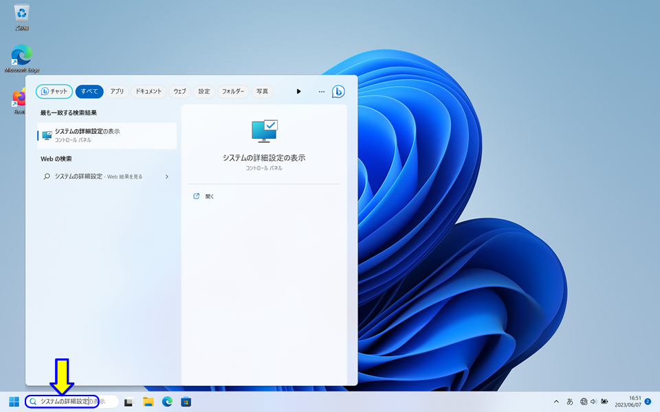
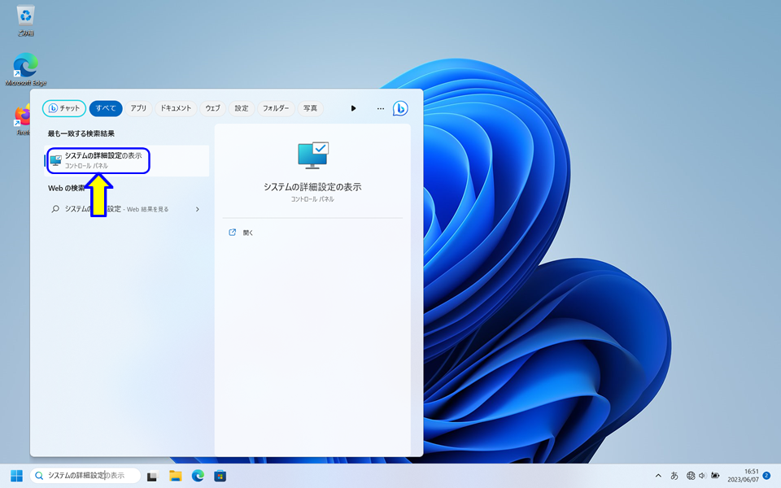
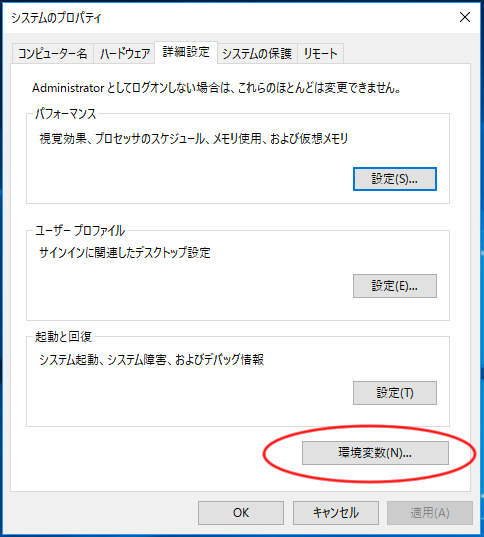
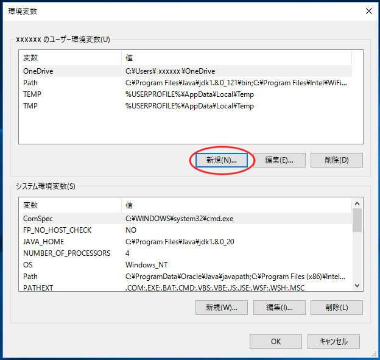
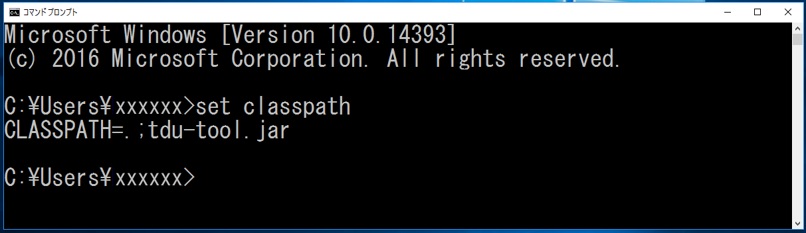
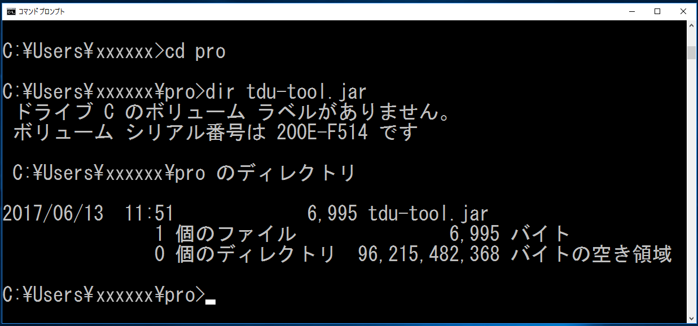

ファイルをダウンロードし、Javaのソースコードを保存しているディレクトリ（フォルダ）に置いてください．
（ダウンロード後，ファイル名が変更された場合は，「tdu-tool.jar」に戻してください．）
「システムの詳細設定」の検索をします．
タスクバーの検索ボックスに，「システムの詳細設定」を入力します．

検索結果の「システムの詳細設定の表示」をクリックします．

[詳細設定]のタブを選択し，[環境変数]をクリックします．

ユーザの環境変数の[新規]をクリックします．

を入力して，[OK]をクリックします．
[OK]をクリックします．

コマンドプロンプトを開きます．
set classpath [Enter]
CLASSPATH を確認します．

cd pro [Enter]
プログラムのディレクトリに移動します．
dir tdu-tool.jar [Enter]
tdu-tool.jarを確認します．

（注意事項）
「システムの詳細設定」を修正（変更）した場合は，「コマンドプロンプト」を開き直す必要があります．
以上で，設定は完了です．
(設定チェックツール)
どうしてもキーボード入力等が動作しない場合は，以下のチェックツールで確認をしてください．
１．CT.bat, CT.class をダウンロードして，Javaのソースコードを保存しているディレクトリ（フォルダ）に置いてください．
２．コマンドプロンプトを開きます．
C:\Users\xxxxxx>
３．Javaのソースコードを保存しているディレクトリ（フォルダ）に移動します．
C:\Users\xxxxxx> cd pro
４．チェックツールを起動します．
C:\Users\xxxxxx\pro> CT
設定ミスがあれば，ヒントが表示されますので，修正してください．